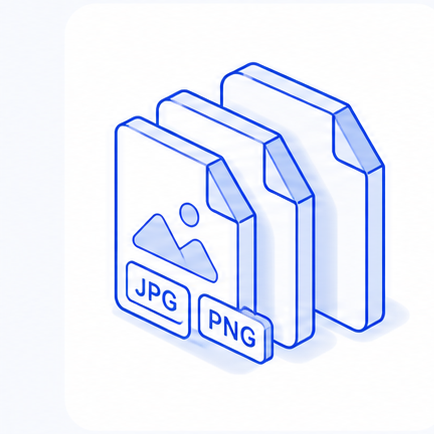

Private browser-based image DPI metadata tool
Image DPI Checker & Converter
Check image DPI, pixel dimensions, megapixels, aspect ratio, and estimated print size. Change JPG or PNG DPI metadata to 300 DPI without uploading your image.

Drop image here to check DPI
Supports JPEG and PNG DPI metadata. You can also click the area or paste an image.
No file selected
Ready to inspect image DPI metadata.
or
or press
Ctrl
+
V
Choose a JPEG or PNG for the most reliable DPI metadata result.
Loaded locally
Image file
-, -, -, current DPI: -
Target DPI
300 DPI
DPI / print size
Estimated output
72 DPI
-
150 DPI
-
300 DPI
-
600 DPI
-
Target
-
DPI conversion
Metadata only
| Before | After | Pixels | Status |
|---|---|---|---|
| - | 300 DPI | Unchanged | Ready |
| Quality | Changing DPI metadata does not add pixels or improve detail. | ||
| Privacy | The file is read and rewritten in this browser. | ||
Pixels unchanged
Upload an image to see the exact pixel dimensions.
How it works
Upload
Select, drop, or paste an image. The file stays on your device.
Check DPI
Read stored DPI metadata and calculate practical print sizes.
Download
Save a copy with updated DPI metadata and unchanged pixels.
Image DPI guide
Why image DPI matters
Image DPI is often a stored metadata value. Real print sharpness depends on how many pixels are available for the physical size you want.
For print, effective DPI is calculated from pixel dimensions divided by the intended print size.
Web
Browsers mainly care about pixel dimensions, not the stored 72 DPI or 96 DPI label.
Design
Some print shops, publishers, and upload forms require a 300 DPI tag even when pixels are unchanged.
300 DPI print size calculator
How many pixels do you need?
A 300 DPI metadata tag is useful for print workflows, but the real limit is still pixel count. Use this quick table to estimate whether your image has enough pixels for common print sizes.
| Print size | Pixels needed at 300 DPI | Typical use |
|---|---|---|
| 4 x 6 in | 1200 x 1800 px | Photo prints and postcards |
| 5 x 7 in | 1500 x 2100 px | Photo prints and invitations |
| 8 x 10 in | 2400 x 3000 px | Portraits and small posters |
| 8.5 x 11 in | 2550 x 3300 px | Letter-size documents |
| 11 x 17 in | 3300 x 5100 px | Tabloid posters and spreads |
DPI tools and guides
Find the right DPI workflow
Use these focused pages when you need a checker, a converter, a 300 DPI workflow, or a print-size calculation before downloading your image.
Checker
Image DPI Checker
Read stored DPI metadata, pixels, print size, and file details.
Converter
Image DPI Converter
Change JPG or PNG DPI metadata without changing pixels.
300 DPI
Convert Image to 300 DPI
Prepare a 300 DPI tag for print shops and submission forms.
JPG
JPG DPI Converter
Update JPEG JFIF or EXIF resolution metadata locally.
PNG
PNG DPI Converter
Add or replace PNG pHYs density metadata in the browser.
Print size
300 DPI Print Size Calculator
Calculate inches and pixels for common print sizes.
Verify after download
How to check image DPI on your computer
Windows
Right-click the downloaded JPG or PNG, choose Properties, open Details, and check Horizontal resolution and Vertical resolution.
macOS Preview
Open the image in Preview, choose Tools, then Show Inspector. The DPI value appears under image information when the file contains resolution metadata.
Photoshop or design tools
Open Image Size or Document Properties. Confirm the resolution tag, then check that pixel width and height stayed unchanged.
FAQ
Image DPI questions
What is image DPI?
Image DPI is a density value stored in image metadata. It tells print or design software how many pixels should map to one inch, but it does not create new detail by itself.
Can I convert JPG or PNG to 300 DPI?
Yes. Upload a JPG or PNG, choose 300 DPI, and download a copy. The tool updates DPI metadata in the browser while keeping the same pixel dimensions.
Is 300 DPI good for printing?
300 DPI is a common print target for sharp close-viewed work. Whether your image is good enough depends on its pixel dimensions and the final print size.
Does changing DPI improve image quality?
No. Metadata-only DPI conversion changes the label, not the pixels. A sharper print usually needs more pixels or a smaller physical print size.
Are my images uploaded?
No. This page reads and rewrites supported image files in the browser. The image does not need to leave your device.
Which formats are supported?
DPI checking works best for JPEG and PNG. Metadata-only DPI conversion currently supports JPEG and PNG. Other formats can be previewed, but DPI metadata may not be reliably readable in the browser.